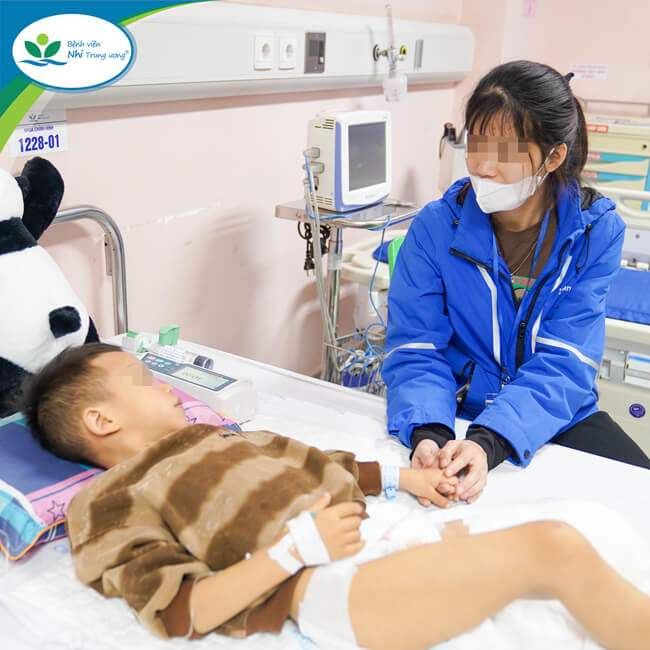

Các bác sĩ BV Nhi Trung ương ương vừa tiếp nhận một bệnh nhi 6 tuổi ở Thái Nguyên bị tai nạn giao thông nghiêm trọng, đứt rời 1/3 dưới chân trái do va chạm với xe container trước cổng trường học.
Gia đình cho biết, khi tan học, bé M.K chạy qua đường trước, ông đi theo sau, đúng lúc xe container đánh lái tránh xe máy đỗ hai bên đường trước cổng trường nên đã cán qua chân của bé. Tai nạn khiến bé M.K bị đứt rời 1/3 dưới chân trái.
Sau khi được sơ cứu và băng ép vết thương tại bệnh viện địa phương, bé M.K được chuyển đến Bệnh viện Nhi Trung ương để tiếp tục điều trị vào giờ thứ 6 sau tai nạn.
Tại Bệnh viện Nhi Trung ương, qua thăm khám các bác sĩ nhận thấy chân trái của trẻ bị tổn thương phức tạp, đứt rời cẳng bàn chân trái, mất nhiều máu, da xanh, niêm mạc nhợt. Ngay trong đêm, các bác sĩ khoa Cấp cứu và Chống độc, cùng khoa Chỉnh hình, khoa Gây mê hồi sức đã hội chẩn và quyết định vừa truyền máu vừa phẫu thuật cấp cứu cho bệnh nhi.
ThS.BS Nguyễn Vũ Hoàng – Khoa Chỉnh hình, Bệnh viện Nhi Trung ương, người trực tiếp phẫu thuật cho bệnh nhi cho biết: “Phần tổn thương của trẻ quá lớn, dập nát quá nặng nên không thể bảo toàn được toàn bộ chân trái, chúng tôi chỉ có thể cố gắng bảo tồn phần chân còn lại dài nhất có thể cho trẻ”.
Trong quá trình phẫu thuật, sau khi khâu cầm máu, thắt các động mạch và thần kinh, bơm rửa sạch và cắt lọc vết thương, các bác sĩ nhận định còn phần xương bánh chè và khớp gối của trẻ có thể bảo tồn được. Do đó, ekip đã quyết định cắt cụt 1/3 trên cẳng chân, tận dụng phần tổn thương còn lại để tạo hình mỏm cụt, đặt sonde dẫn lưu mở rộng các đường dẫn lưu của da, với mong muốn có thể bảo tồn được khớp gối và phần chân còn lại dài và sinh lý nhất, để sau khi vết thương ổn định, trẻ lắp chân giả có thể vận động tốt hơn.
Sau phẫu thuật, M.K được hồi sức tích cực, kiểm soát các rối loạn huyết động, chống nhiễm trùng, sử dụng kỹ thuật hút áp lực âm (V.A.C) giúp làm sạch vết thương, loại bỏ dịch máu ứ đọng, tổ chức hoại tử, giảm phù nề, tăng cường nuôi dưỡng tại chỗ cho phần vạt da được tạo hình.
Hiện tại, sau hơn 1 tuần điều trị, bệnh nhi tỉnh táo, không sốt, mỏm cụt khô. Trẻ vẫn tiếp tục được dùng V.A.C và thay băng định kỳ để đánh giá phần da che phủ vết thương. Thời gian tới nếu vết thương tiến triển tốt, trẻ sẽ được tháo V.A.C và vá phần da khuyết hổng. Sau khi lành thương vài tuần, trẻ sẽ được tư vấn tập phục hồi chức năng và lắp chân giả phù hợp với lứa tuổi.
Để bảo đảm trật tự an toàn giao thông trước cổng trường học, các bác sĩ khuyến nghị nhà trường cần phối hợp chặt chẽ với chính quyền địa phương và lực lượng chức năng bố trí địa điểm đỗ xe cho phụ huynh, phân bổ nhân lực thường xuyên phân luồng giao thông vào giờ tan học. Đồng thời, các bậc phụ huynh cũng cần nâng cao ý thức, đi đúng làn đường và tốc độ được quy định đối với khu vực gần trường học; dừng, đỗ, quay đầu xe đúng nơi quy định. Nhà trường và gia đình cần tăng cường giám sát, tổ chức các lớp tập huấn, hướng dẫn trẻ các kỹ năng an toàn khi tham gia giao thông, tránh những tai nạn đáng tiếc xảy ra.